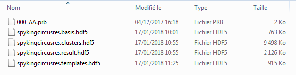

This example shows how to use create a NeoAll instance.
Note
NeoAll instances are created from the SpykingCircus files. See here for details about these results files. NeoAll needs at least three arguments to be initiated :
For instance, the Spyking Cirucs files may look like these :
get_templates_from_spykingcircus_file() function.First import the neoStructures :
from neoStructures import *
import matplotlib.pyplot as plt
from os.path import isdir, join
Import the data and create the NeoAll instance
data_dir = join('pySpikeAnalysis', 'sample_data') if isdir('pySpikeAnalysis') else join('..', '..', 'pySpikeAnalysis', 'sample_data')
spykingcircus_dir = r'SpykingCircus_results'
probe_filename = r'000_AA.prb'
results_filename = r'spykingcircusres'
neoAll = NeoAll(join(data_dir, spykingcircus_dir), results_filename, join(data_dir, probe_filename), save_fig=0)
See information about NeoAll
print(neoAll)
Out:
NeoAll Instance with 54 units. 1 Neo segment per unit. Each segment contains 1 Neo spiketrain
10 channel indexes
neoAll contains a list of Neo Segments (1 segment per unit)
print(type(neoAll.segments[0]))
Out:
<class 'neo.core.segment.Segment'>
Computing the mean firing rate is easy, e.g. for unit 3:
mean_spkrate_3 = len(neoAll.segments[3].spiketrains[0]) / (neoAll.segments[3].t_stop - neoAll.segments[3].t_start)
print(mean_spkrate_3)
Out:
2.410294521750985 1/s
The method neoStructures.NeoAll.plot_spikerate_evolution() can be used to visualize the firing-rate over time
The firing rate is computed by kernel convolution. The kernel is gaussian and the standard deviation can be set using
the sigma_gauss_kernel parameter.
The package Elephant is used for the estimation.
neoAll.plot_spikerate_evolution(unit_pos=3, sigma_gauss_kernel=30*s)
The shape of each unit can be plotted using the plot_unit_shape method :
neoAll.plot_unit_shape(2)
As well as the ISI (Inter-Spike Interval), e.g. for unit 22 :
neoAll.plot_isi(unit_pos=22)
Zoom on the x-origin and increase the number of bins for the histogram
neoAll.plot_isi(22, bin_duration_ms=0.1, tmax_ms=15)
Total running time of the script: ( 0 minutes 1.526 seconds)